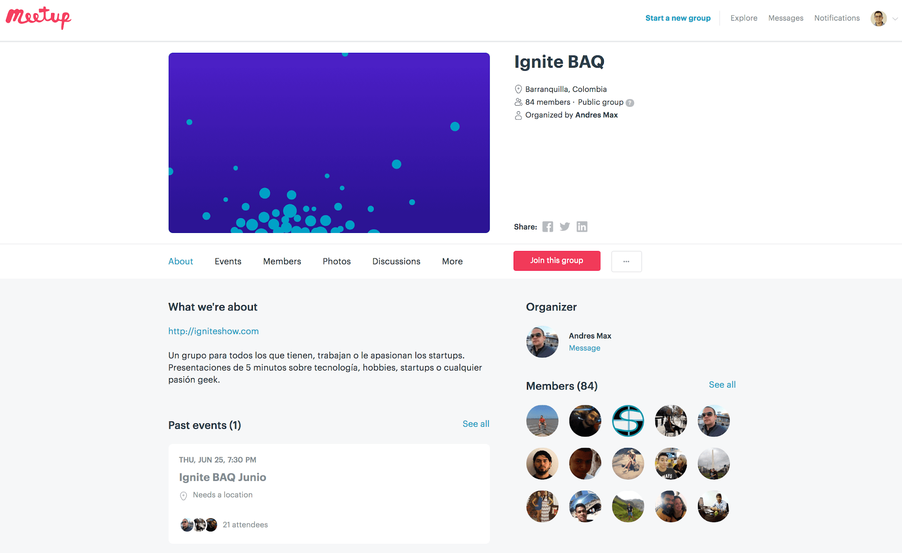
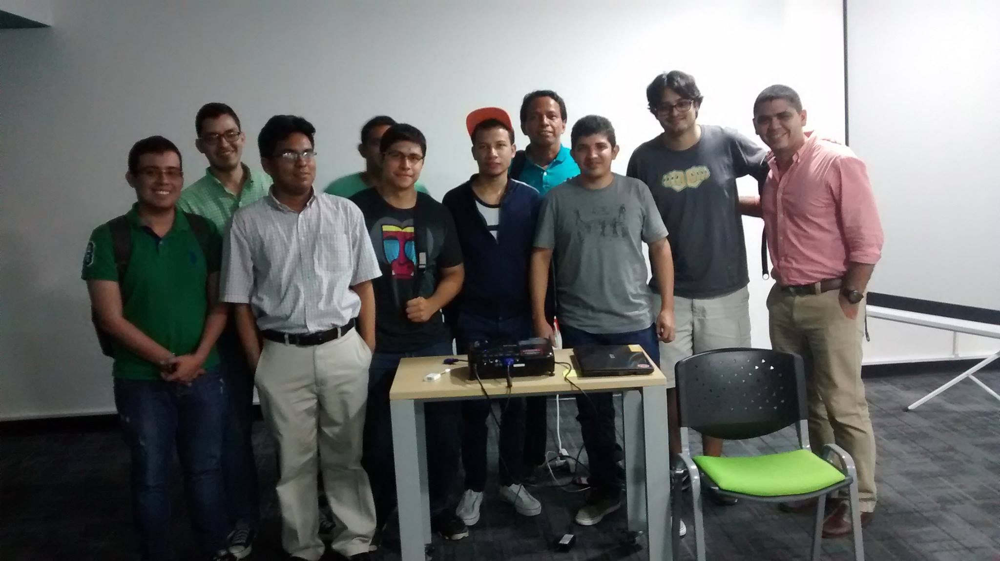
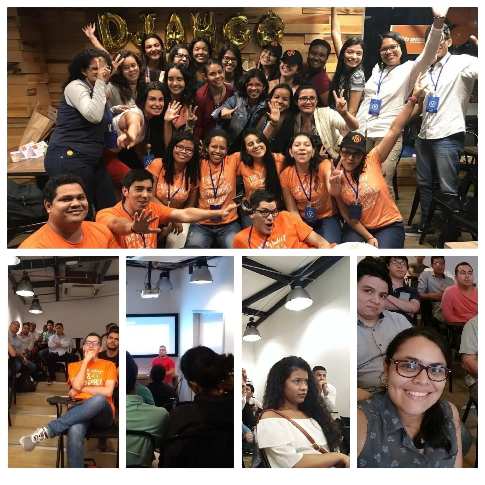
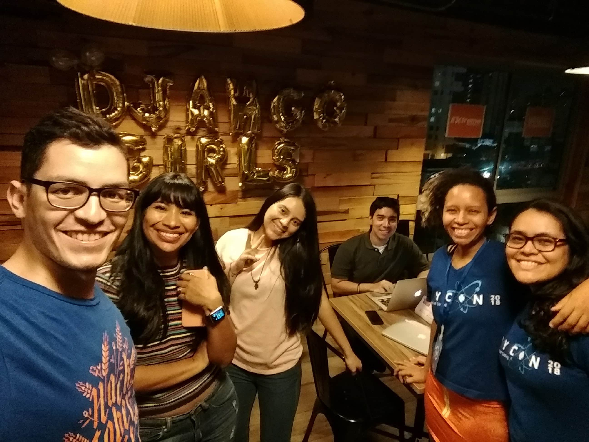
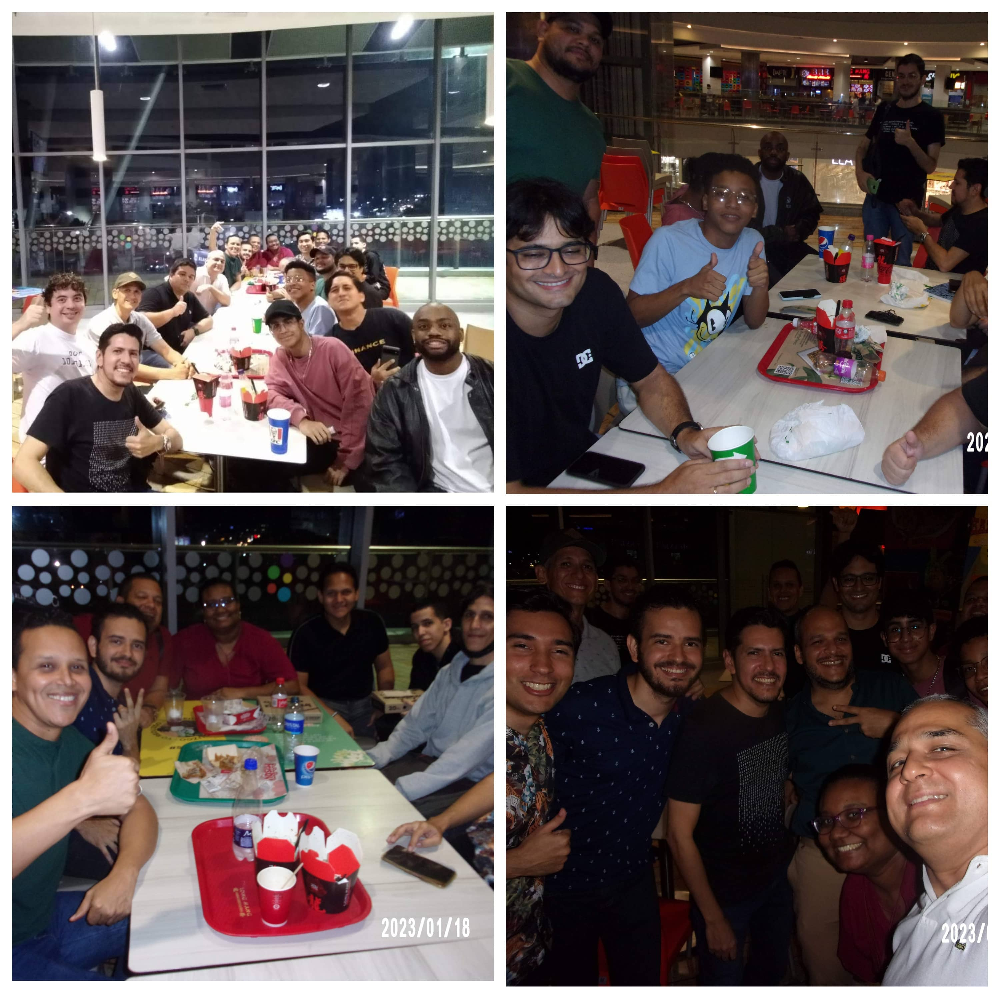

Years ago I wanted to do a commemorative article of all these years in which the community has worked in Barranquilla. This is my intention to summarize the most important events in these 8 years, which is not an easy task at all, taking into account all the anecdotes and adventures we have experienced.
2014: The beggining

Although the community started in 2015, its history began to be created a year before, when I started attending technology events in Barranquilla. My first event was Ignite BAQ created by the Ideaware company (who would say that in the future they would sponsor us a Django Girls event and the first HacktoberFest Barranquilla event).
As I commented at minute 3:42 of my talk at PyCon Colombia 2019 "Creating successful technology communities", it was there that I met the first people who today are the first members of the Python Barranquilla community. Thank you very much guys for the support.
2015: We are Django Barranquilla!

The first name we had was Django Barranquilla, since the Django framework was the common thread that united us and marked the purpose to meet. Thanks to that first approach with djangonauts in 2014, with the help of Jose Luis we managed to connect with the AreaDos coworking, managed by Koombea (a company that to this day sponsors us with the venue).
In that year, multiple communities would see the light thanks to this workspace, as was Ruby BAQ. Thanks to my attendance at one of their meetings, I was able to gain the motivation to organize the first Django (and obviously Python) meetup.
Highlights this year:
- We achieved the first 10 regular attendees. This was good because we managed to acquire frequency.
- We did 18 events in the year.
- In some months we did 2 events a month.
- We didn't have sponsors, so we did the famous "cow" to collect the money from the pizzas (this year we decided on Domino's pizzas because of their philosophy of pizza in 30 minutes)
2016: What if you are called Python Barranquilla?
We started 2016 with all the expectations in the world. From 2015 we learned that increasing the frequency to two events per month would not bring us more audiences, so this was the first year that we just began to think about the need to advertise on social networks.
This was the year that I began to contact other community leaders in the country such as Jhon Roa (chief organizer PyCon Colombia) and Gonzalo Peña (Python Bucaramanga). It was in this year that I began to collaborate with Jhon Roa and his team of volunteers to create the first PyCon-style event (by the initials in English of PYthon CONference).
This year we had two events that marked the community. The first was my first trip to Japan and the second was the end of AreaDos as a workspace. From here all the doubts in the world would arise, who would organize the community during my trip? How would we get speakers? (I still ask myself this question lol) How would we get a new event venue? Both obstacles would have to be overcome by the community itself, without my presence as organizing leader 😱
This year also coincided with my first job with Python at Piensa Labs. Unbeknownst to me, this had a huge impact on the Python community:
- Piensa Labs would become our new event venue.
- The company went on to become one of the biggest sponsors of the first PyCon Colombia.
On the organizational side, community partners César and Leonardo were in charge of keeping the community active, giving talks themselves and connecting with universities (Universidad de la Costa, CUC and Universidad Santo Tomás).
Highlights:
- The end of AreaDos as a workspace. It was a great place, it's a shame.
- We did 12+1 events this year (Lektor's was repeated 1 time due to rain)
- The community continued even though I was out of town for 6 months, it already had a life of its own!
- We had the first approaches with the Python Colombia network and with universities. They were the ones who suggested we change our name.
- This year the tradition of celebrating each new year in the first month of the year arises.
- The first commit is made for the landing page of djangoquilla.com
2017: Ché, Do you want to do a Django Girls Barranquilla?
This year, upon my return to Colombia, I found out that Koombea has its own building that includes a theater. I went to visit it and it was spectacular! This visit marked the restart of our collaboration with the company to carry out the events.
By the way, until this point, everyone thought that I was an employee of Koombea hahaha. Some people I guess still think so (last month they asked me LOL).
This year marked a before and after for the entire Python Colombia network. It was the first PyCon Colombia and it brought an unprecedented boost to the network of communities. For us it means having face-to-face contact with speakers of international stature both in the city where the event was held and in Barranquilla itself.
Thanks to the work of Manuel Kaufmann (better known as @humitos) ) and Johanna Sanchez (@ellaquimica) with Argentina in Python, we entered the world of Django Girls. Manuel initially contacted us because he had been advancing the project of holding multiple events in Latin America, as an ambassador for the PSF (who financed it). After three months of hard work and training, we were able to hold the first Django Girls Barranquilla 2017 event.
We also have the visit of mentors from all over Colombia and our first Argentine speaker. You can read more about the event in my memoirs about the first Django Girls Barranquilla. The impulse was such that that same year in October we decided to hold the first Django Girls Cartagena, and in this way, train a team of Django Girls organizers in "La Heroica".
Thanks to the Django Girls events, the local community grew significantly. All this due to our exposure in different media (we appear on the radio and newspapers of the city), to the contact with universities and educational corporations.
Highlights this year:
- Assistance to the first PyCon Colombia
- First Django Girls Barranquilla and first Django Girls Cartagena.
- Creation of the website using Lektor. This was thefirst post
- We had our first Machine Learning talk with Wayner. It seemed like Wayner was speaking to us in Chinese at that event hehe. At that time there was little talk of AI.
- We held an event in educational corporations such as CEIPA and CUES.
- We did 16 events a year (not including the one in Cartagena).
📸 Check the photos of the Django Girls Barranquilla 2017 event
🏖 Check the photos of the Django Girls Cartagena 2017 event
2018: First Hacktoberfest Barranquilla

This was the year of "putting more effort into design", and making better promotional images of the events. Thanks to all the momentum we had in 2017, we had to rethink the way events were promoted (until before Django Girls I remember we only used word of mouth).
This year we began to experiment with giving 2 talks per event with the PyCon Colombia format. In this way, we would also help train people as speakers. All this paid off because later this year we had the participation of several of our members as speakers and workshop leaders at PyCon Colombia 2018](https://2018.pycon.co/).
Something to note is that 2 talks a month meant double the effort to motivate and find people willing to share knowledge. This has been and will be the biggest challenge we have every month.
This year we made a new Django Girls Barranquilla 2018 on our own at the Koombea facilities. Up to this point, we were still reliant on Argentina's help in Python to promote the event on their website.
One of the coolest and most challenging moments of the year was working with the Barranquilla technological communities of the time to celebrate Hacktoberfest 2018, an initiative by Github and other international companies to promote the contribution to open source. On October 20, 2018 we did our epic crossover (in the best power rangers style) with the communities:
- BaqJS
- Pioneras dev
- Fullstack Labs
- Barranquilla Analítica
The idea was to have a fun afternoon full of talks, code, pizzas and of course, beer.
Highlights from 2018:
- First Hacktoberfest celebration in Barranquilla
- We started making images to promote community events.
- We hold 12+1 events a year.
- The "PyBAQ team" begins to be created by Manuel's suggestions. Several Django Girls who participated in 2017 enter the community and the team.
- This year the talks were very inclined to topics of data science and artificial intelligence.
- We had the first talk on computer security.
📸 Check the photos of the Django Girls Barranquilla 2018 event
2019: We are sponsored by the Python Software Foundation

This year is very relevant for us, because we were officially sponsored by the PSF (acronym for Python Software Foundation). If you want to know more about the PSF, I leave you this talk by Manuel Kaufmann about what is the Python Software Foundation?
From this moment on we stop officially collecting money from attendees and finally giving out free pizzas (the end of years of shame 🤣🤣)
This year it became customary for us and we could not miss another Django Girls Barranquilla 2019event. Thanks to previous efforts, our organizing team was already made up of girls up to this point.
For this year, the Python Colombia community (and us) already had their own website, so we did the online promotion with their support. The event information for 2019 was found at Taller de programacion para mujeres - Barranquilla 2019
This year, we held our first online events with the help of the Colombia AI community. They took care of the transmission to YouTube and we took care of the logistics at the event location.
This year we had our first speaker from Peru, Josimar Chiré, who would become a frequent speaker in the community from then on. We also broadcast his talk online together with Colombia AI. You can also find the video of the talk on YouTube.
Highlights from 2019:
- First hybrid events (face-to-face and broadcast on YouTube) together with the Colombia AI community.
- Sponsorship of the PSF for snacks at the meetings.
- We hold 14 events a year
- This year I traveled abroad again, so the PyBAQ team was in charge of several events during the year.
2020: We become "youtubers"
This year we had big changes in holding events due to the global emergency situation due to the pandemic. Initially, we had the help of Koombea, again, to carry out the events via Zoom the first 8 months of the year. After this, the Python Colombia community helped us with access to a paid Streamyard account to stream the events to YouTube on the @PythonColombia YouTube channel.
In addition to the whole issue of virtuality, we wanted to experiment with a new presentation format, so to end the year we did lightning talks, where the methodology consists of presenting 20 slides in 20 seconds. You can see all the rules in Lightning Talks 2020: Python Barranquilla.
Highlights from 2020:
- We started doing virtual events and recording them on YouTube.
- We hold the usual 12+1 events a year.
- We did the lightning talk event.
- We started to standardize the design of promotional images, thanks to Paula.
- The Hacktoberfest this year we made it virtual https://pybaq.co/hacktoberfest-2020/
2021: The Python League
This year the great experience was having won a sponsorship from the Empanada Fundinitiative, which sponsored us the 2021 Python League tournament. The first version of the Python League failed miserably, which forced us to iterate a Python League version 2.0. which led us to even have a speaker from Argentina.
For the League we wanted to set the stage as a soccer world cup, with qualifiers, two semifinals and a Python League final. It was a very nice experience, and also, thanks to the Empanada Fund initiative, we had the opportunity to meet projects from all over Latin America.
Highlights from 2021:
- We recorded more virtual events on the YouTube channel
- Empanada Fund Initiative: Python League 2021
- We hold the usual 12+1 events a year
2022: Lack of female representation

The virtuality and lack of Django Girls events caused female participation in the community to drop drastically. This particular year was the first year that I did a summary article of all the python-adventures we had, so I won't go into too much detail here.
If you want to know more about our 2022, you can read Python Barranquilla Events in 2022.
Highlights this year were:
- Maintain virtual events.
- Coordinate the team for the logistics of events.
- Hold the first face-to-face meeting of the team since 2019.
- We adjusted the design of the promotional images to the color palette of the Python Barranquilla brand.
- It is planned to return to face-to-face.
- We hold 12 events in the year.
2023: Back to in-person events.

We're back in person! And we come back with everything.
📸 You can see here the photos of the Welcome meeting 2023.
For this year we bought wireless microphones and a Logitech camera to do the hybrid events, just like we did in 2019 with Colombia AI, only now, we would also be responsible for the transmission to YouTube. This year, there is still a lot of fabric to cut.
If you have read this far, I greatly appreciate your interest ♥️. I thank all the people, companies, non-profit entities, educational corporations and universities that supported us to make this initiative a reality.
Infinite thanks to my team and the community. Without you, these 8 years of adventures were possible.
Tell us in the comments about other anecdotes or experiences that you may have missed.